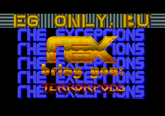
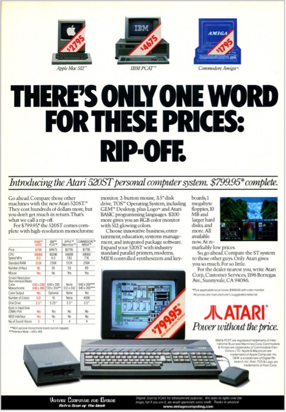

Chapter 2. A Hitchhiker's Guide to The Exceptions
The Exceptions were not only the first demo-group on the Atari ST but from 1987 to 1989 they were the most prolific one on the system. Their name was abbreviated as TEX (which could easily be misread as "rex" in their logo). They came from what was then West Germany.
Figure 14: The Logo of The Exceptions
2.1 Who Are The Exceptions?
Erik Simon, Jochen Hippel, and Udo Fischer were the core group of The Exceptions. They were all born in the mid-1960s and early 1970s and were young adults by the time the Commodore 64 was released in Europe.
They adopted "handles," or aliases. Erik was ES, which were not only his initials but also the German word for "it." Jochen was Mad Max, named after the post-apocalyptic movies with Mel Gibson (who was not a controversial figure at the time). Udo was -ME-. The Exceptions' other members were Michael Raasch, who called himself Daryl after the 1985 science-fiction movie D.A.R.Y.L., and Gunter Bitz, who called himself 6719, the postal code of his hometown Kirchheimbolanden in the Rhineland-Palatinate (Rheinland-Pfalz).
Erik Simon's specializations were the graphics, concept work, and writing the text of the scrolling messages. In ST-NEWS, he later described his own contribution as:
"...my specialties are graphics and the invention of effects that should be realized by the aforementioned programmers and that (in the best cases) just make them moan and groan." [34]

Figure 15: Erik Simon (ca. 2016), Udo Fischer (†2016), and
Jochen Hippel (ca. 2016)
(Source: Marco A. Breddin. Breakin' the Borders. 2017.
Microzeit Verlag)
Udo, Gunter, and Michael were the programmers of the demo and intro effects. They wrote their routines in assembly code using an assembler which was as close as you could get to the native instructions of the processor before resorting to the pure ones and zeros of machine code. Their areas of specialization were raster interrupts, soft-scrolling, and speed-optimizations, i.e., they could program the ST to show more colors than it should, scroll the screen faster and smoother than it was meant to, and could optimize the efficiency of code so well that it would be executed faster.
Jochen, a.k.a. Mad Max, was the sound programmer and composer of The Exceptions. His instrument was the Atari ST's admittedly subpar sound chip Yamaha YM2149F (also produced as General Instruments AY-3-8910). Mad Max managed to conjure sounds and music that were reserved for much more advanced sound processors.
TEX also had associated members: AFF (Axel), Martin Fry (Markus), and Dr. Byte (Carsten), who occasionally contributed.
2.2 The Origins of TEX on the Commodore 64
The Exceptions first came together around the legendary Commodore 64. This 8-bit machine became one of the best-selling computers of all time.[35]
Udo Fischer and Erik Simon tried their hand at their first demos on the C64. Udo programmed while Erik painted. Their first attempts were solely of a hobbyist nature.
When the Atari ST sporting the blazing-fast Motorola 68000 processor was announced in 1985, they knew that this was the right machine to move to the new generation of 16-bit computers. Before the ST became available in Europe and the price dropped to an affordable level for The Exceptions, they started learning to write assembly code for the Motorola 68000 on the Commodore 64. It was slow and barely useable since a far less powerful machine (the C64) simulated the processor of a much more powerful one (the Atari ST). Yet, this allowed Udo Fischer to learn the assembly instructions and get his first experience on the new processor without yet owning the new computer they yearned for.[36]
Later in 1985, a friend of Udo and Erik, Heinz, acquired an Atari ST. There was not much software available this early in the machine's life. Udo and Erik knew that they had a chance to try their routines that they painstakingly created in the simulated 68000 on the C64. They visited Heinz and ran their first small programs on the real Atari ST.

Figure 16: The cracktro by The Exceptions for the game Terrorpods by Psygnosis (screenshot)
Erik Simon described this as:
"And there it ran: Our first assembler program! It was supposed to fill the entire screen memory with the value $FFFF. The screen, however, did not simply start getting filled, but was just filled the moment our program started. We yelled like madmen, and our shrewd conclusion was: 'This processor must be fast!'" [37]
Since it would take a while for any of them to get an Atari ST, Udo wrote and assembled his programs on the C64, and on weekends went over to Heinz's place to type the code into the ST. In 1986, Udo and Erik got their own Ataris. Udo purchased a model with a monochrome monitor with a stable black-and-white display that would allow him to spend prolonged periods of time in front of the ST without overly burdening his eyes. Erik wanted to produce color graphics using one of the early paint apps available, NEOchrome, so he bought a color monitor with his system. As a development environment, they found the K-Seka assembler by Kuma Soft.
Udo found one of the first German books about the hardware of the Atari ST, ST Intern, by the now-defunct publisher Data Becker from Düsseldorf. Apparently, the book had a few factual errors in it, but this did not prevent Udo from learning to produce fast code on his new computer. Hence, the Exceptions were born.
At first, TEX was part of the cracker scene, who cracked the copy protection on games and pirated them. Of note, they only ever cracked a handful of games on the Atari ST and added cracktros and intros to them. They quickly moved on to only producing demos, and later still became commercial games developers with their own company called Thalion. [38]
Figure 17: One of the many logos of ST-NEWS
(Source:
https://st-news.com
)
In other parts of Germany, the Scandinavian countries and the Netherlands more demo-groups formed following the example of The Exceptions. The resulting works were not only demos, intros, and cracktros, but also regularly published diskmags (disk magazine), an enthusiast periodical publication distributed on a disk and through Bulletin Board Systems. The longest running diskmag was ST-NEWS. Richard Karsmakers, the editor-in-chief, has archived all issues at https://st-news.com.

Figure 18: Advertisement for the Atari 520ST
(Source:
http://www.vintagecomputing.com/index.php/archives/952/retro-scan-of-the-week-atari-520st
)
2.3 The Atari ST and the Amiga Demoscenes
In his licentiate thesis Computer Demos - What Makes Them Tick?, Markku Reunanen describes the relationship between demo-makers on the Atari ST and the Amiga as follows:
"Apart from its faster CPU, the Atari ST was clearly in the underdog position with its modes graphics and sound hardware. Effects from the Amiga were mimicked and improved through ingenious programming tricks, but the flow was mostly one-way." [39]
As the "underdogs," the Atari ST demo-makers felt the need to attack the Amiga and its demoscene. While this was noticed by the Amiga scene, they did not reciprocate, because the Commodore Amiga started to sell large quantities with the introduction of the Amiga 500 in 1987, a year that the sales of the Atari ST still exceeded the Amiga.[40] Sales of the Commodore machine started to outpace the Atari machine in 1988, completely outselling the Atari ST from 1989 onwards.[41] These are important figures because the number of machines in homes determines the number of potential demo developers. Once the Amiga continuously outsold the ST, there was no concept of true competition in the eyes of Amiga demo-makers. They were making demos not only for the technically superior platform but also for the more successful platform.
Reunanen describes his observations on the key differences between the two scenes as well:
"Some specialties existed, however. The extensive use of interactive selection screens in Atari megademos is a property virtually unique to ST demos. Significant effort was invested in the selection screens alone."
The selection screens Reunanen refers to are the screens that users are presented with for demos that consist of collections of different component demos. Multiple groups of demo-makers united to create these megademos with different graphics and music styles, all packaged in a single demo. Of the demos discussed in this thesis, the megademo designation applies to the Union Demo. At least on the Atari ST in the years from 1987 to 1989, megademos usually did not have many recurring elements across all their component demo screens.
Reunanen continues to state:
"Atari megademos frequently featured parts of multiple groups, which is a rather uncommon feature in the scene as well."
Therefore, we can determine that the Atari ST demoscene had two distinguishing components:
- The perception of being an underdog to the Commodore Amiga, which resulted in a friendly, and sometimes unfriendly, rivalry, but only in one direction. The ST was mostly ignored by the Amiga scene.
- The prevalence of megademos on the Atari ST, where multiple demo-groups join forces to create a collection of demos that are packed together and can be accessed via a selection screen.
The Exceptions had purchased their 16-bit computer, the Atari 520ST. Their loyalty was towards this machine, and they were just starting to learn how to program the "guts" of their machine. The scene was set: they were drenched in the pop culture, the big ideas and fantasies of the day, the competition was clear, and the game was about to start. In 1987, they created their very first stand-alone demo for the Atari ST.
2.4 Conclusion: Limitations of Early Home Computers
Computers in the 1980s had a wide variety of capabilities based on their hardware and retail price. The Atari ST range of computers was engineered in a rush to market in order to compete in the emerging 16-bit computer sales war. To meet the schedule and keep costs down, the engineering team had to use many off-the-shelf components. The ST was released on time, but the process resulted in a machine that was less capable than its 16-bit competitors.
Unfortunately, the Atari ST became the underdog of the 16-bit machines. It had color limitations, large screen borders, no dedicated graphics chips for horizontal or vertical scrolling, no hardware support for sprites, and a sound chip that was used in 8-bit computers. The most similar, yet more capable, competing system was the Amiga produced by Commodore.
The Exceptions started out as a cracking group on the Commodore 64. They switched over to the Atari ST and started creating intros to their cracked games to prove that the ST could meet the capabilities of the Commodore Amiga. Comparable to digital graffiti, this tribalism for certain computer systems led to competition between systems for the best intros and demos, and on the same system, led to competition between crackers, intro-makers, and demo-makers to create the most impressive intros and demos.
Footnotes
[34] ST-NEWS. The Wizards - Part I.
https://st-news.com/en/issues/st-news-volume-3-issue-5/education/the-wizards-part-i/
(Retrieved on May 14, 2020)
» Back [34]
[35] Russell Barnes.
Sales soar and Raspberry Pi beats Commodore 64. 2017.
https://magpi.raspberrypi.org/articles/raspberry-pi-sales
(Retrieved on June 12, 2020)
» Back [35]
[36]
Erik Simon, Udo Fischer, Tarik Ahmia.
Die Hexer (Teil 1).
ST-Magazin 68000er. 07/1988
http://www.stcarchiv.de/stm1988/07/die-hexer-teil-1
(Retrieved on May 12, 2020)
» Back [36]
[37]
Erik Simon, Udo Fischer, Richard Karsmakers.
The Wizards Part I.
https://st-news.com/issues/st-news-volume-3-issue-5/education/the-wizards-part-i/
(Retrieved on May 12, 2020)
» Back [37]
[38]
Thalion Source, a fansite of Thalion's games.
http://home.wtal.de/gmb/
(Retrieved on May 7, 2020)
» Back [38]
[39]
Reunanen, Markku. Computer Demos -
What Makes Them Tick? (Supervisor: Prof. Tapio Takala).
Helsinki. 2010. Aalto University, School of Science and
Technology, Faculty of Information and Natural Sciences,
Department of Media Technology. Pages 86 - 87
» Back [39]
[40]
Atari ST Computer Sales and Marketshare: A Comparison.
https://amigalove.com/viewtopic.php?t=131
(Retrieved on May 3, 2020)
» Back [40]
[41]
Reimer, Jeremy. 2005.
Total share: 30 years of personal computer market share
figures.
Ars Technica.
https://arstechnica.com/features/2005/12/total-share/5/
(Retrieved on May 7, 2020)
» Back [42]